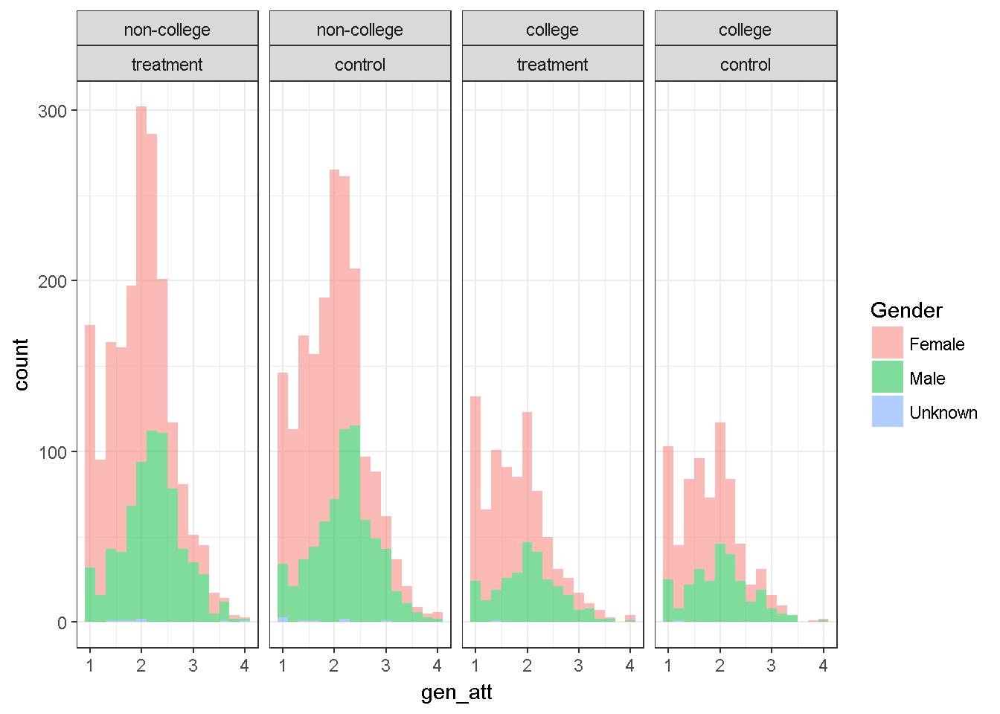

7 Descriptive Statistics and Hypthoses Testing
Descriptive statistics are used to describe a sample. We used the dataWBT (Section 2.3) to illustrate (a) how to calculate and report descriptive statistics, (b) prepare basic graphics and (c) conduct hypothesis testing.
In section 2, we demonstrated how to download R, R studio and to create an R script. This section was built on an assumption that the reader would create a script and follow the steps. It would definetely be more convenient if each step is undertaken to given order.The dataWBT can be imported into your R environment by running:
# load csv from an online repository
urlfile='https://raw.githubusercontent.com/burakaydin/materyaller/gh-pages/ARPASS/dataWBT.csv'
dataWBT=read.csv(urlfile)
#remove URL
rm(urlfile)7.1 Descriptive Statistics
This subsection covers mean, median, variance, standard deviation, skewness and kurtosis calculations. The gender attitude variable (2.3)is chosen for illustrations.
7.1.1 Mean
The arithmetic mean is the sum of the available scores on a variable divided by the number scores as shown in Equation (7.1).
\[\begin{equation} \bar{Y} = \frac{1}{n} \sum\limits_{i=1}^n {Y_i} \tag{7.1} \end{equation}\]# Calculate the mean for available gen_att variable
mean(dataWBT$gen_att,na.rm = T)
## [1] 1.940576
# Calculate the mean for more than one variable
# check ?colMeans
colMeans(dataWBT[,c("gen_att","item1")],na.rm = T)
## gen_att item1
## 1.940576 3.4510147.1.2 Median
The median is the mid-point of the scores that have been ranked form low to high. If the number of elements in a vector is odd, the median is the \({(n+1)/2}^{th}\) value. If it is even, the median is the average of \({n/2}^{th}\) and \({(n+1)/2}^{th}\) value.
# Calculate the median
median(dataWBT$gen_att,na.rm = T)
## [1] 27.1.3 Variance
The sample variance is a summary of spread. It is the average squared deviation of values around their mean as shown is Equation (7.2).
\[\begin{equation} s_Y^2 = \frac{1}{{n - 1}}\sum\limits_{i = 1}^n {\left( {Y_i - \bar Y} \right)^2 } \tag{7.2} \end{equation}\]#calculate variance
var(dataWBT$gen_att,na.rm = T)
## [1] 0.36384087.1.4 Standard deviation
The sample standard deviation is the square root of the sample variance as shown is Equation (7.3).
\[\begin{equation} s_Y = \sqrt {\frac{1}{{n - 1}}\sum\limits_{i = 1}^n {\left( {Y_i - \bar Y} \right)^2 } } \tag{7.3} \end{equation}\]#calculate standard deviation
sd(dataWBT$gen_att,na.rm = T)
## [1] 0.60319227.1.5 Skewness
Skewness is a measure of distributional shape. The skewness value of a perfectly symmetric distributional shape is 0.
A negative value typically indicates that the shape has longer tails on the left side, hence called skewed left or negatively skewed. The median is larger than the mean.
A positive value typically indicates that the shape has longer tails on the right side, hence called skewed right or positively skewed. The median is smaller than the mean.
The sample skewness formula2 is shown in Equation (7.4).
\[\begin{equation} \sqrt{n}\frac{\sum_{i}^{n}\left ( X_{i}-\bar{X} \right )^{3}} {\left (\sum_{i}^{n} \left ( X_{i}-\bar{X} \right )^{2} \right )^{3/2}} \tag{7.4} \end{equation}\]The package moments (Komsta and Novomestky 2015) includes the skewness function to calculate sample skewness.
#calculate sample skewness using the moments package
library(moments)
skewness(dataWBT$gen_att,na.rm = T)
## [1] 0.377095NOTE: It is possible to estimate population skewness parameter and its standard error,
hence, to calculate a z-score. This z-score can be compared to a critical value ,
such as 1.96, to conclude whether the skewness is statistically significant or not.
The same procedure applies to Kurtosis.
There also are other procedures to test for normality, such as Shapiro-Wilk.
The decisions based on these procedures are sensitive to sample size.
These procedures are losing their popularity.
Robustness to non-normality for a given procedure is often investigated
via Monte Carlo simulation studies.7.1.5.1 Skewness Examples
A sample from a normal distribution and its skewness value
Figure 7.1: A random variable with normal distribution
A sample from a left skewed distribution

Figure 7.2: A random variable with left skewed distribution
A sample from a right skewed distribution
Figure 7.3: A random variable with right skewed distribution
7.1.6 Kurtosis
Kurtosis is another measure of distributional shape. The Pearson kurtosis value of a normal distribution, \(N \sim (0,1)\) is 3.
The sample kurtosis formula is shown in Equation (7.5) .
\[\begin{equation} n\frac{\sum_{i}^{n}(X_i-\bar{X})^4}{(\sum_{i}^{n}(X_i-\bar{X})^2)^2} \tag{7.5} \end{equation}\]Equation (7.5) does not give values lower than 0. Values between 0 and 3 might occur for flatter distributions, such as uniform. Values larger than might 3 occur for long tailed distributions. It is common practice to subtract 3 from the calculated value to ease interpretation.
The package moments (Komsta and Novomestky 2015) includes the kurtosis function to calculate the Pearson kurtosis value.
#calculate skewness using the moments package
library(moments)
kurtosis(dataWBT$gen_att,na.rm = T)
## [1] 2.9039057.1.6.1 Kurtosis Examples
A sample from a normal distribution and its kurtosis value

Figure 7.4: A random variable with normal distribution
A sample from a uniform distribution and its kurtosis value
Figure 7.5: A random variable with unifrom distribution
A sample from a beta distribution
Figure 7.6: A random variable with right skewed distribution
7.1.7 Reporting descriptives
Library psych (Revelle 2016), doBy (Højsgaard and Halekoh 2016) and apaStyle (de Vreeze 2016) MIGHT be helpful for reporting results but it might need further modifications, for example rows should not be numbered. Following R code outputs descriptive statistics for the gender attitudes average score and age.
# psych package's describe function reports;
# n: the number of available scores
# mean, sd, median, trimmed mean (trim=0.05 5% trimmed)
# median absolute deviation, minimum, maximum, range
# skew and kurtosis-3 (type=2 provide population estimates)
# standard error
library(psych)
desc1=describe(dataWBT[,c("gen_att","age")],trim = 0.05,type=3)
desc1
## vars n mean sd median trimmed mad min max range skew
## gen_att 1 5302 1.94 0.60 2 1.92 0.59 1 4 3 0.38
## age 2 5308 27.08 7.21 25 26.62 5.93 15 60 45 0.96
## kurtosis se
## gen_att -0.10 0.01
## age 0.63 0.10
# export
write.csv(desc1,file="pscyhdesc.csv")
#doBy
# summaryBy is a wrapper, provide variables and functions
# its useful for summary by group
library(doBy)
library(moments)
desc2=as.matrix(summaryBy(gen_att+age~treatment, data = dataWBT,
FUN = function(x) { c(n = sum(!is.na(x)), nmis=sum(is.na(x)),
m = mean(x,na.rm=T), s = sd(x,na.rm=T),
skw=moments::skewness(x,na.rm=T),
krt=moments::kurtosis(x,na.rm=T)) } ))
#set decimals=2 using round function
round(desc2,2)
## treatment gen_att.n gen_att.nmis gen_att.m gen_att.s gen_att.skw
## 1 1 2736 265 1.93 0.6 0.38
## 2 2 2566 335 1.95 0.6 0.38
## gen_att.krt age.n age.nmis age.m age.s age.skw age.krt
## 1 2.90 2739 262 26.89 7.17 0.99 3.69
## 2 2.91 2569 332 27.28 7.24 0.93 3.57
write.csv(round(desc2,2),file="doBydesc.csv")
#apaStyle
# create APA style table as a word file
library(apaStyle)
apa.descriptives(data = dataWBT[,c("gen_att","age")],
variables = c("Gender Attitude","Age"), report = c("M", "SD"),
title = "APAtableGenderAge", filename = "APAtableGenderAge.docx",
note = NULL, position = "lower", merge = FALSE,
landscape = FALSE, save = TRUE)
##
## Word document succesfully generated in: C:/Users/Burak/Desktop/github/SARP-EN
#if you are receiving Rjava error a quick fix is described here
#https://www.r-statistics.com/2012/08/how-to-load-the-rjava-package-after-the-error-java_home-cannot-be-determined-from-the-registry/Figure 7.7: APAtableGenderAge.docx
7.1.7.1 Write-up
The Gender Attitudes score from 5302 participants had a range of 1–4, a median of 2, a mean of 1.94 and SD=0.6. The score distribution has a sample skewness value of 0.38 and a sample kurtosis value of -0.1.3
7.2 Basic graphics
One of R’s strong suit is its graphing capabilities. There are several plotting families; including R base(R Core Team 2016b), lattice(Sarkar 2016), ggplot2(Wickham and Chang 2016) and plotrix(Lemon et al. 2016). We prefer to use ggplot2. This subsection briefly includes basics. The number of arguments in a ggplot function is large, enabling a user to manipulate every detail in a graph4 .
7.2.1 Histogram
A histogram is a diagram of rectangles. These rectangles are created as function of frequency/relative frequency given any variable.
7.2.1.1 Histogram of one variable
Useful for distributional evaluation.
library(ggplot2)
ggplot(dataWBT, aes(x = gen_att)) +
geom_histogram(binwidth = 0.2)+ theme_bw()+labs(x = "Gender Attitude")+
theme(axis.text=element_text(size=15),
axis.title=element_text(size=14,face="bold"))Figure 7.8: Gender Attitudes Score Distribution
7.2.1.2 Histogram of one variable by one factor
Useful for evaluating group differences.
dataWBT$HEF=droplevels(factor(dataWBT$higher_ed,
levels = c(0,1),
labels = c("non-college", "college")))
ggplot(dataWBT, aes(x = gen_att, fill=HEF,drop=T)) +
geom_histogram(breaks=seq(1, 4, by =0.2),alpha=.5,col="black")+
theme_bw()+labs(x = "Gender Attitude",fill='Higher Ed.')+
theme(axis.text=element_text(size=15),
axis.title=element_text(size=14,face="bold"))
dataWBT2=na.omit(dataWBT[,c("gen_att","HEF")])
ggplot(dataWBT2, aes(x = gen_att)) +
geom_histogram(breaks=seq(1, 4, by =0.2),alpha=.5,col="black")+
theme_bw()+labs(x = "Gender Attitude")+ facet_wrap(~ HEF)+
theme(axis.text=element_text(size=15),
axis.title=element_text(size=14,face="bold"))
Figure 7.9: Gender Attitudes by Treatment Group
library(ggplot2)
ggplot(dataWBT, aes(x = gen_att)) +
geom_histogram(binwidth = 0.2)+ theme_bw()+
facet_wrap(~city, ncol = 8)7.2.1.3 Histogram of one variable by two factors
Useful for two way interactions
dataWBT2=na.omit(dataWBT[,c("gen_att","HEF","gender")])
ggplot(dataWBT2, aes(x = gen_att,fill=gender)) +labs(fill='Gender')+
geom_histogram(binwidth = 0.2,alpha=.5)+ theme_bw()+
facet_grid(~HEF)7.2.1.4 Histogram of one variable by three factors
Useful for three way interactions
dataWBT$Condition=droplevels(factor(dataWBT$treatment,
levels = c(1,2),
labels = c("treatment", "control")))
dataWBT2=na.omit(dataWBT[,c("gen_att","HEF","gender","Condition")])
ggplot(dataWBT2, aes(x = gen_att,fill=gender)) +labs(fill='Gender')+
geom_histogram(binwidth = 0.2,alpha=.5)+ theme_bw()+
facet_grid(~HEF+Condition)
7.3 Hypothesis testing introduction
The Cambridge dictionary returns “all the people or animals of a particular type or group who live in one country, area, or place” as the definition of population. In social sciences, generally, a population is “all the people of a particular group”, for example 8 year old students, or, 8 year old students in a specific country, or 8 year old dyslectic students. In any study the researcher can determine the population relevant to the research aims. Any measurable characteristics of the units in a given population can form a variable. In other words, the population of the variable can be definable. In section 5.2.3, possible variable types are identified. The population of the variable includes all of the possible values (outcomes), forms the range and probabilities of occurrence. Densities (for continuous) and mass functions (for discrete) can be used to summarize these probabilities. With a valid distributional assumption for the variable, we can infer from the sample to population.
A random sample from a population might or might not include all of the possible values. But a random sample is expected to be selected so that there is no systematic bias in the selection and therefore to be similar to the population especially when the sample is large. A population parameter is estimated with a model using the information from the sample. Fitting a model consists of evaluating the degree of discrepancy between a model and the observed data. Hypothesis tests (or statistical inferences) based on a fitted model aim to reach a conclusion in terms of the substance of the problem.
7.3.1 The Sampling distribution
A statistic computed from a random sample is a random variable and has a distribution. The most common example of a sampling distribution is the sampling distribution of the mean. The central limit theorem implies that under simple random sampling5, regardless of the shape of the distribution of the variables, the sampling distribution of the mean can be approximated by a normal distribution ;
\[\begin{equation} \bar X_n \sim N(\mu, \frac{\sigma^2}{n}). \tag{7.6} \end{equation}\]as the sample size gets larger. In addition if the shape of the distribution is normal, the sampling distribution of the mean is given by (7.6) for all sample sizes.
The standard deviation of a sampling distribution of the mean is called as the standard error of the mean and it is used in statistical inference.
The population parameters \(\mu\) and \(\sigma^2\) in (7.6) are unknown, but the expression is useful in understanding how well the sample mean is likely to approximate the population mean. Suppose a researcher plans to draw a simple random sample of size n=10. According to (7.6) the sampling distribution will be approximately normally distributed with mean \(\mu\) and standard deviation \(\sigma⁄\sqrt{10}\). Suppose that unknown to the researcher, \(\mu=100\) and \(\sigma=15\). Then the sampling distribution will have standard deviation \((15⁄\sqrt{10})=4.74\) and there will be approximately a 95% chance that the sample mean will be between 90.7 and 109.3, an interval that suggests a sample size of 10 will result in a sample mean which could be quite inaccurate. If the researcher draws a simple random sample of 100, there will be approximately a 95% chance that the sample mean will be between 97.1 and 102.9, an interval that suggests a reasonably accurate sample mean.
At this point, the question is which estimator is unbiased, consistent and efficient to estimate the expected values, hence the population parameters. It can be shown mathematically that Equation (7.1) is an unbiased estimator of \(\mu\) and Equation (7.2) is an unbiased estimator of \(\sigma^2\).
7.3.1.1 Unbiased estimation and sampling
To be added
7.3.2 The Confidence Intervals (CI)
Using an assumption about the distribution, information from the sample and an appropriate estimator (to produce a point estimate), confidence intervals can be constructed. A confidence interval might include the population parameter and yields correct decisions, however if it does not include the population parameter, erroneous decisions are made. Creating a CI for a sample mean is straight forward. Assuming sampling from a normal distribution, the distribution is normal6 and the sample mean is an unbiased estimator. A normal distribution has known properties, the density function implies 95% of the density lies within 1.96 standard deviations from the mean. A visual is given below (Figure 7.10), the probability of a random draw from the blue area is only 5%. Similarly, the probability is 10% for a drawn from the blue or yellow area. The grey area (\(\pm 1\)) represents approximately 68% of the density. This information is useful. Using the sample mean and variance, the 95% confidence interval for \(\mu\) can be created.
Figure 7.10: The z distribution
7.3.2.1 A confidence interval example
Below R code calculates the sample mean, the standard deviation and the confidence interval for the Gender Attitude scores’ mean.
# the number of available data points, n
GA_n=sum(!is.na(dataWBT$gen_att))
#calculate the mean
GA_m=mean(dataWBT$gen_att,na.rm = T)
#calculate the sd
GA_s=sd(dataWBT$gen_att,na.rm = T)
#95% confidence interval
lower=GA_m - 1.96 * (GA_s/sqrt(GA_n))
lower
## [1] 1.924339
upper=GA_m + 1.96 * (GA_s/sqrt(GA_n))
upper
## [1] 1.956812
#or
GA_m +c(-1,1)*1.96 * (GA_s/sqrt(GA_n))
## [1] 1.924339 1.956812
#the value 1.96 can be called by qnorm(0.975)7.3.2.2 Write up
The Gender Attitudes score from 5302 participants had a mean score of 1.94 and 95% CI was 1.92–1.96 (SD=0.60).
7.3.3 The null hypothesis
The purpose of a hypothesis test is to determine which of two hypotheses about the population are supported by the sample data. A hypothesis test includes mainly 5 steps;
State the null hypothesis (for example \(\mu=0\))
Select an alternative hypothesis. (for example \(\mu \neq 0\))
Select a test statistic
Make a decision by comparing the calculated value of the test statistic to the critical value. If the calculated test statistic is more extreme than the critical value then we reject the null hypothesis.The critical value depends on the alternative hypothesis.
State a conclusion. That is state what the decision means in term of the substance of the problem.
The null (\(H_0\)) and alternative (\(H_1\)) hypotheses are established to answer the research question. Statistical evidence is used to decide whether to reject or fail to reject the null hypothesis. Rejecting or retaining a null hypothesis is a decision. The following table shows some important concepts in how statisticians think about hypothesis testing.
| State of Nature | Decision | Result |
|---|---|---|
| \(H_0\) | Fail to reject \(H_0\) | Correct |
| \(H_0\) | Reject \(H_0\) | Incorrect (Type I error,\(\alpha\)) |
| \(H_1\) | Reject \(H_0\) | Correct |
| \(H_1\) | Fail to reject \(H_0\) | Incorrect (Type II error, \(\beta\)) |
Type I error—the act of rejecting \(H_0\) when it is true, a false positive error. Alpha, \(\alpha\), is the probability of rejecting \(H_0\) when it is true. An important goal in hypothesis testing is to ensure that \(\alpha\) is sufficiently small. Usually this goal is met by requiring \(\alpha\) to be .05, which says that the researcher is willing to tolerate a .05 probability that they will conclude there is a difference (Reject \(H_0\)) when \(H_0\) is true.
Type II error - the act of failing to reject a hypothesis that is false. Beta, \(\beta\), is the probability of retaining \(H_0\) when it is false.
7.3.4 The z score and the z test
A general formula for z is \[z_X=\frac{X-\bar{X}}{s_X}\]
This z-variable, also known as z-score, has a mean of 0 and standard deviation of 1. If X is normally distributed, z will also be normally distributed.
# Create z-scores for the Gender Attitudes
GA_m=mean(dataWBT$gen_att,na.rm = T)
GA_s=sd(dataWBT$gen_att,na.rm = T)
z_GA=(dataWBT$gen_att-GA_m)/GA_s
#OR
z_GA=scale(dataWBT$gen_att, center=T, scale=T)
# Scale function can be used for more than 1 variable
# center=T substracts mean from each score.
# scale=T divide the difference by standard deviation
# try scale(dataWBT$gen_att, center=3, scale=2)to substract 3 from each score and divide by 2.The z test for a sample mean is straight forward; \[ z=\frac{\bar{X}-\mu_{hypothesis}}{Standard error of the mean} = \frac{\bar{X}-\mu_{hypothoses}}{\sigma_X/\sqrt{n}}\] This z statistic can be interpreted using a z distribution (Figure 7.10);
If the alternative hypothesis states that the observed mean is expected to be lower than the hypothesized mean, the z statistic is compared to \(z_{alpha}\) or \(-z_{(1-alpha)}\). The null hypothesis is rejected if the z-statistic is less than or equal to \(z_{alpha}\).
If the alternative hypothesis states that the observed mean is expected to be different than the hypothesized mean, the absolute value of the z statistic,\(|z|\) is compared to \(z_{1-(alpha/2)}\). The absolute value of the z-statistic should be larger (or equal) than \(z_{1-(alpha/2)}\) to reject the null.
If the alternative hypothesis states that the observed mean is expected to be greater than the hypothesized mean, the z statistic is compared to \(z_{1-alpha}\). The z-statistic should be larger (or equal) than \(z_{1-(alpha)}\) to reject the null.
Here it should be emphasized that a directional alternative hypothesis (cases a and c) has a substantially different criteria compared to a non-directional (case b) hypothesis. The researcher should provide justification for the alternative hypothesis that is used.
7.3.4.1 z test illustration-1 (non-directional)
Stating the null as \(H_0: \mu_{Gender Attitudes} = 2\) and alternative as \(H_1: \mu_{Gender Attitudes} \neq 2\) and using \(\alpha=0.05\);
# the number of available data points, n
GA_n=sum(!is.na(dataWBT$gen_att))
#calculate the mean
GA_m=mean(dataWBT$gen_att,na.rm = T)
#calculate the sd
GA_s=sd(dataWBT$gen_att,na.rm = T)
# set the null
mu_hyp=2
# z statistic
(GA_m-mu_hyp)/(GA_s/sqrt(GA_n))
## [1] -7.17343
#the critical value for alpha=0.05 and nondirectional test
qnorm(1-(0.05/2))
## [1] 1.959964The Gender Attitudes score from 5302 participants had a mean of 1.94 and SD=0.6. A one-sample z test revealed that the observed mean is 7.17 standard error below the hypothesized mean of 2. Using a rejection criteria of 1.96 (\(z_{1-(0.05/2)}\)) the difference between the observed mean and the hypothesized mean was concluded to be statistically significant.
7.3.4.2 z test illustration-2 (directional)
In this illustration, the Gender Attitudes scores’ population mean is assumed to be 1.9 with a standard deviation of 0.75. When the population standard deviation is known it should be used. Stating the null as \(H_0: \mu_{Gender Attitudes} = 1.9\) and alternative as \(H_1: \mu_{Gender Attitudes} > 1.9\) and using \(\alpha=0.01\);
# set the null
mu_hyp=1.9
# z statistic
(GA_m-mu_hyp)/(0.75/sqrt(GA_n))
## [1] 3.939368
#the critical value for alpha=0.01 and directional test
qnorm(1-(0.01))
## [1] 2.326348Using a critical value of 2.33 (\(z_{0.99}\)), results indicated that the Gender Attitudes scores’ mean was significantly greater than the hypothesized value of 1.9 (\(z=3.94\)).
7.3.5 The one-sample t test
Interpreting a z statistic based on a z distribution is not valid for small sample sizes. If the sample size is small, a t distribution with a n-1 degrees of freedom is valid assuming the population has a normal distribution. The procedure is the same as the z-statistic, but the critical values change.
7.3.5.1 t test illustration-1 (non-directional)
In the dataWBT, city DUZCE has only 52 participants and 47 available Gender Attitudes scores. For illustrative purposes this city is chosen.
Stating the null as \(H_0: \mu_{Gender Attitudes} = 1.94\) and alternative as \(H_1: \mu_{Gender Attitudes} \neq 1.94\) and using \(\alpha=0.05\);
dataWBT_DUZCE=dataWBT[dataWBT$city=="DUZCE",]
#descriptive statistics
describe(dataWBT_DUZCE[,"gen_att"],type=3)
## vars n mean sd median trimmed mad min max range skew kurtosis se
## X1 1 47 2.18 0.55 2 2.14 0.59 1 3.8 2.8 0.56 0.28 0.08
#t test
t.test(dataWBT_DUZCE$gen_att,
alternative="two.sided",
mu=1.94,
conf.level = 0.95)
##
## One Sample t-test
##
## data: dataWBT_DUZCE$gen_att
## t = 2.9391, df = 46, p-value = 0.005133
## alternative hypothesis: true mean is not equal to 1.94
## 95 percent confidence interval:
## 2.014224 2.336840
## sample estimates:
## mean of x
## 2.175532
#critical value
qt(.975,df=46)
## [1] 2.012896The Gender Attitudes scores from 47 participants in DUZCE had a range of 1–3.8, a median of 2, a mean of 2.18 and SD=0.55. The score distribution had a sample skewness value of 0.56 and a sample kurtosis value of 0.28.7 A one sample t-test revealed a significant difference, t(46)=2.94 between the city’s observed mean and the hypothesized mean of 1.94 using a critical value of 2.01 (\(t_{.975,46}\)).
7.3.5.2 t test illustration-2
In the previous example a directional test was conducted in which the alternative hypothesis specified that the population mean would not be equal to 1.94. What will happen if the null hypothesis is \(H_1:\mu_{GenderAttitudes} \leq 1.94\)?
For the city DUZCE, stating the null as \(H_0: \mu_{Gender Attitudes} = 1.94\) and alternative as \(H_1: \mu_{Gender Attitudes} \leq 1.94\) and using \(\alpha=0.05\);
#t test
t.test(dataWBT_DUZCE$gen_att,
alternative="less",
mu=1.94,
conf.level = 0.95)
##
## One Sample t-test
##
## data: dataWBT_DUZCE$gen_att
## t = 2.9391, df = 46, p-value = 0.9974
## alternative hypothesis: true mean is less than 1.94
## 95 percent confidence interval:
## -Inf 2.310055
## sample estimates:
## mean of x
## 2.175532
#critical value
qt(.05,df=46)
## [1] -1.67866A one sample t-test, t(46)=2.94, revealed that the evidence does not support a conclusion that the population mean is smaller than 1.94, using a critical value of -1.68 (\(t_{.05,46}\)).
7.3.6 The p value
The t-test illustrations (the t.test function) reported a p-value. Calculation of a p-value is based on the assumption that the null hypothesis is true and an assumption about the distribution of the test statistic . The p-value aims to inform if the calculated statistic is ordinary or not for a given distribution. Historically, a p-value smaller than the pre-determined alpha value led researchers to conclude whether a finding is statistically significant.
7.3.7 The p value illustration
Assuming a z-distribution is valid, and the calculated z-statistic is 1.80, following visual is drawn.
Figure 7.11: The z distribution and z=1.8
The blue area corresponds to 3.6% of the density, in other words p=0.0359;
1-pnorm(1.8)## [1] 0.03593032This p-value is valid for a directional test but not for a non-directional test. When the uncertainty exists for the direction, the following visual depicts the situation;
Figure 7.12: The z distribution and abs(z)=1.8
The blue area, now, corresponds to 7.2% of the density, in other words p=0.0719;
2*(1-pnorm(1.8))## [1] 0.071860647.3.8 Statistical power
The power of a statistical test is the probability that it will correctly reject the null hypothesis,and is equal to \(1-\beta\). This probability can be computed a-priori or post-hoc, whereas a post-hoc analysis is less useful. A-priori power analyses is helpful to design a study and to decide the desired sample size. A-priori power analyses are required for the related grant proposals.
The plot produce by the following R program can be used to explain statistical power8.
x <- seq(-4, 8, 0.02)
zdat <- data.frame(x = x, y1 = dnorm(x, 0, 1), y2 = dnorm(x, 2.5, 1))
ggplot(zdat, aes(x = x)) +
geom_line(aes(y = y1), size=2) +
geom_line(aes(y = y2), color='red',size=2) +
geom_vline(xintercept = c(0,2.5), color="black", linetype = "longdash")+
geom_vline(xintercept = qnorm(1 - 0.05))+
scale_x_continuous(breaks = c(-4,0,1.65,2.5,4))+
annotate("text", label="beta" , x=1.1, y=0.05, parse=T, fontface =2, size=6)+
annotate("text", label="alpha", x=2 , y=0.02, parse=T, fontface =2, size=6)+
annotate("text", label="1-~beta", x=3.3, y=0.1, parse=T, fontface =2,size=6)+
geom_area(aes(y=y1, x = ifelse(x > qnorm(.95), x, NA)), fill = 'blue' , alpha=0.25) +
geom_area(aes(y=y2, x = ifelse(x > qnorm(.95), x, NA)), fill = 'green' , alpha=0.25) +
geom_area(aes(y=y2, x = ifelse(x < qnorm(.95), x, NA)), fill = 'yellow', alpha=0.25) +
xlab("z") + ylab("dnorm(z)") + theme_bw()Figure 7.13: Power illustration with z distribution
The z distribution assuming a true null hypothesis (\(H_0:\mu=0\)) is depicted with black borders; the mean for the sampling distribution is 0 under this assumption and is shown with a dashed line. The z distribution assuming (a) the null hypothesis is false and (b) the actual population mean and standard deviation are such that \(((\mu-\mu_{hypothesis} )⁄(\sigma⁄\sqrt{n})=2.5)\) is depicted with red borders. This visual is valid for a directional test with \(\alpha=0.05\), hence, with a critical value of \(z_{0.95}=1.65\). The blue area represents \(\alpha\), the yellow area represent \(\beta\) and the green area represents power. In this particular case the power is .804.
1-pnorm(qnorm(0.95),mean=2.5)## [1] 0.8037649Figure 7.13 visually shows that9 a power calculation includes 2 distributions, an alpha value and a test statistic. With these knowns the statistical power can be calculated. It should be noted that a test statistic has its own elements, generally a numerator and a denominator. For a z test, the numerator is the difference between the hypothesized mean and the null, whereas the denominator is the standard error of the mean (\(\sigma/\sqrt(n)\)). If the power is set to a constant (i.e. .80) , equation can be solved for any desired unknown. Generally, the equation is solved for n, the sample size.
The statistical power is revisited in the following chapters. Each design has its own standard error of the parameter estimate and the test statistic has its own distributional features. For a one sample t-test, the power.t.test function is useful;
#power.t.test
power.t.test(delta=.1, sd=.6,sig.level=0.05, power=0.9,
type="one.sample", alternative="one.sided")
##
## One-sample t test power calculation
##
## n = 309.6563
## delta = 0.1
## sd = 0.6
## sig.level = 0.05
## power = 0.9
## alternative = one.sidedThis illustration shows that for pre-determined knowns of a mean difference of 0.1, a standard deviation of 0.6, an alpha level of 0.05, a directional test and a desired power of 0.9, the sample size should be 310. In other words, the probability of rejecting the null (\(H_0:\mu=0\)) is .9 with a sample size of 310, a mean difference of 0.1, SD=0.6, alpha=0.05 and a directional test.
7.3.9 In case the z and the t distribution is not valid
Generalization from knowns to unknowns requires assumptions. A test statistic is robust to a violation of an assumption if, for a given sample size, the sampling distribution of the test statistic remains substantially the same under violation of the assumption(Verzani (2014)). It should be noted that a test statistic may be robust to violations of one assumption but not to violation of another assumption. In addition a test statistic that is robust to violation of one assumption, may not be robust to violation of that assumption when a second assumption is also violated. Even when a test statistic is robust to violation of assumptions, there may be a better test statistic to use when those assumptions are violated.
The z statistic for the one sample mean is expected to be robust against the violations of normality when the sample size is larger than 30 (Field, Miles, and Field (2012), page 198). However, it should be noted that the rate at which the sampling distribution converges to normality depends on the distribution of the data. As a separate note, if the population is assumed to be normal and the sample sizes small, a t distribution is valid.
There are several approaches to produce robust statistics for a one-sample mean test, comprehensively illustrated by Wilcox (2012). Below R code calculates 95% confidence intervals using the second variation of the bootstrap-t method (Wilcox (2012), page 117)
#the second variation of the bootstrap-t method
# select DUZCE and perfom listwise deletion using na.omit
dataWBT_DUZCE=na.omit(dataWBT[dataWBT$city=="DUZCE",c("id","gen_att")])
# test whether the Gender Attitudes' mean is equal to 1.94
# assuming normality and using a t-test
t.test(dataWBT_DUZCE$gen_att,mu=1.94,conf.level = 0.95)
##
## One Sample t-test
##
## data: dataWBT_DUZCE$gen_att
## t = 2.9391, df = 46, p-value = 0.005133
## alternative hypothesis: true mean is not equal to 1.94
## 95 percent confidence interval:
## 2.014224 2.336840
## sample estimates:
## mean of x
## 2.175532
#Calculate 95% CI using bootstrap (normality is not assumed)
set.seed(04012017)
B=5000 # number of bootstraps
alpha=0.05 # alpha
#x is the variable
# xBAR is the observed mean
tstar=function(x,xBAR) sqrt(length(x))*abs(mean(x)-xBAR)/sd(x)
output=c()
for (i in 1:B){
output[i]=tstar(sample(dataWBT_DUZCE$gen_att,
replace=T,
size=length(dataWBT_DUZCE$gen_att)),
xBAR=mean(dataWBT_DUZCE$gen_att))
}
output=sort(output)
Tc=output[as.integer(B*(1-alpha))]
#bootstrap confidence interval
mean(dataWBT_DUZCE$gen_att)+c(-1,1)*(Tc*sd(dataWBT_DUZCE$gen_att)/sqrt(length(dataWBT_DUZCE$gen_att)))
## [1] 2.011540 2.3395247.3.9.1 Write up
The Gender Attitudes scores from 47 participants in DUZCE had a range of 1 to 3.8, a median of 2, a mean of 2.18 and SD=0.55. The score distribution had a sample skewness value of 0.56 and a sample kurtosis value of 0.28. Using a critical value of 2.01 (\(t_{.975,46}\)), a one sample t-test revealed a significant difference, t(46)=2.94 between the city’s observed mean and the hypothesized mean of 1.94 . When the normality is assumed, the 95% confidence intervals using a t-distribution were [2.01,2.34]. When this assumption is not made, the 95% confidence intervals using the bootstrap-t method with 5000 replications (Wilcox 2012) were [2.01,2.34].
7.3.10 Shiny application to visualize sampling distribution
To be added.
References
Komsta, Lukasz, and Frederick Novomestky. 2015. Moments: Moments, Cumulants, Skewness, Kurtosis and Related Tests. https://CRAN.R-project.org/package=moments.
Revelle, William. 2016. Psych: Procedures for Psychological, Psychometric, and Personality Research. https://CRAN.R-project.org/package=psych.
Højsgaard, Søren, and Ulrich Halekoh. 2016. DoBy: Groupwise Statistics, Lsmeans, Linear Contrasts, Utilities. https://CRAN.R-project.org/package=doBy.
de Vreeze, Jort. 2016. ApaStyle: Generate Apa Tables for Ms Word. https://CRAN.R-project.org/package=apaStyle.
R Core Team. 2016b. R: A Language and Environment for Statistical Computing. Vienna, Austria: R Foundation for Statistical Computing. https://www.R-project.org/.
Sarkar, Deepayan. 2016. Lattice: Trellis Graphics for R. https://CRAN.R-project.org/package=lattice.
Wickham, Hadley, and Winston Chang. 2016. Ggplot2: Create Elegant Data Visualisations Using the Grammar of Graphics. https://CRAN.R-project.org/package=ggplot2.
Lemon, Jim, Ben Bolker, Sander Oom, Eduardo Klein, Barry Rowlingson, Hadley Wickham, Anupam Tyagi, et al. 2016. Plotrix: Various Plotting Functions. https://CRAN.R-project.org/package=plotrix.
Verzani, John. 2014. Using R for Introductory Statistics. Second. Boca Raton: CRC Press Taylor; Francis Group.
Field, Andy P., Jeremy Miles, and Zoë Field. 2012. Discovering Statistics Using R. Thousand Oaks, Calif;London; Sage.
Wilcox, Rand R. 2012. Introduction to Robust Estimation and Hypothesis Testing. 3rd;3; US: Academic Press.
These formulas are for biased estimators of skewness and kurtosis, R can calculate unbiased estimators, please see the note in the subsection 7.1.7, specifically the type argument in the describe function↩
Descriptive statistics are calculated with psych (Revelle 2016) package and a histogram 7.8 is created by ggplot2 (Wickham and Chang 2016).↩
ggplot cheatsheet might be helpful https://www.rstudio.com/wp-content/uploads/2015/03/ggplot2-cheatsheet.pdf↩
every member of a population has an equal probability of being selected, a selected member does not affect any other member’s probablity of being selected↩
with small sample size, a t distribution. Not assuming sampling from a normal distribution, it is approximately normal with a large sample size↩
Descriptive statistics were calculated with psych (Revelle 2016) package.↩
partially based on http://multithreaded.stitchfix.com/blog/2015/05/26/significant-sample/↩
accurate only for post hoc power↩